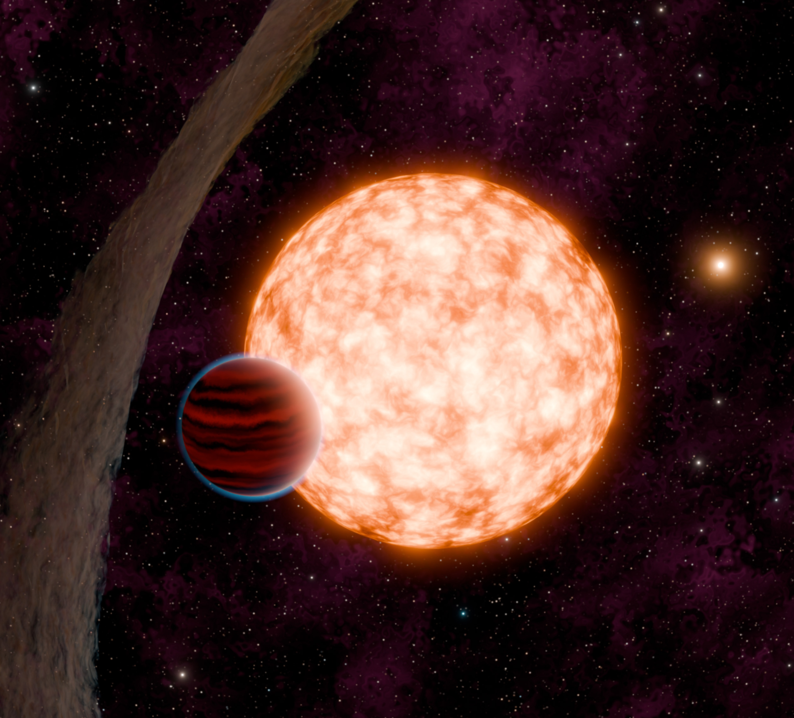

Articles
Art by Adina Feinstein

IRAS 04125+2902 b (aka TIDYE-1b) Press Coverage:
NASA Discovery Alert by Pat Brennan
Interviews with ABC by Julia Jacobo
UNC Communications article by Michael Lananna
Reuters article by Will Dunham
New Scientist article by Jonathan O’Callaghan
Globe and Mail article by Ivan Semeniuk